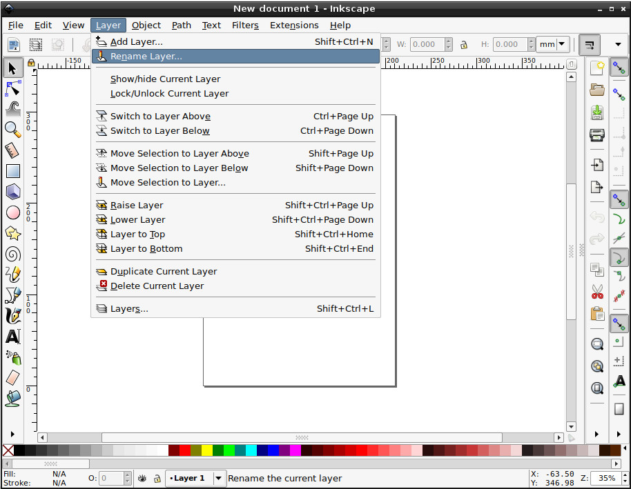
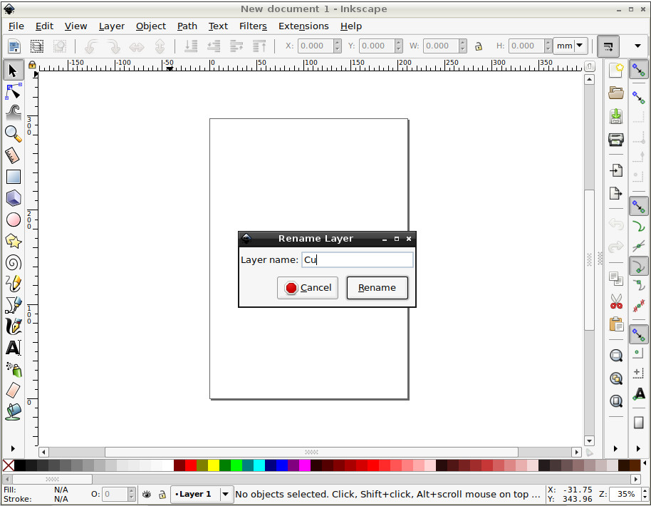
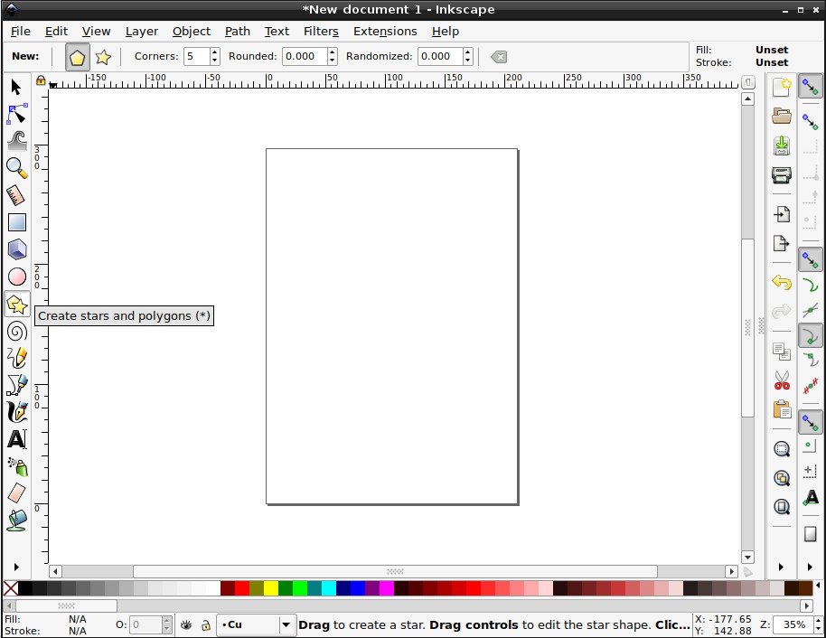
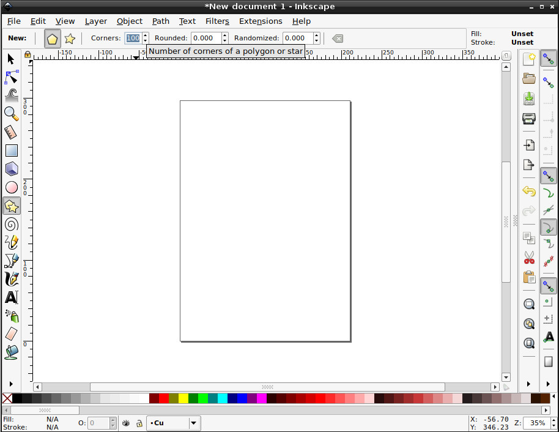
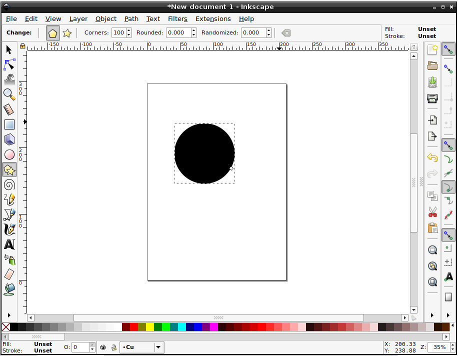
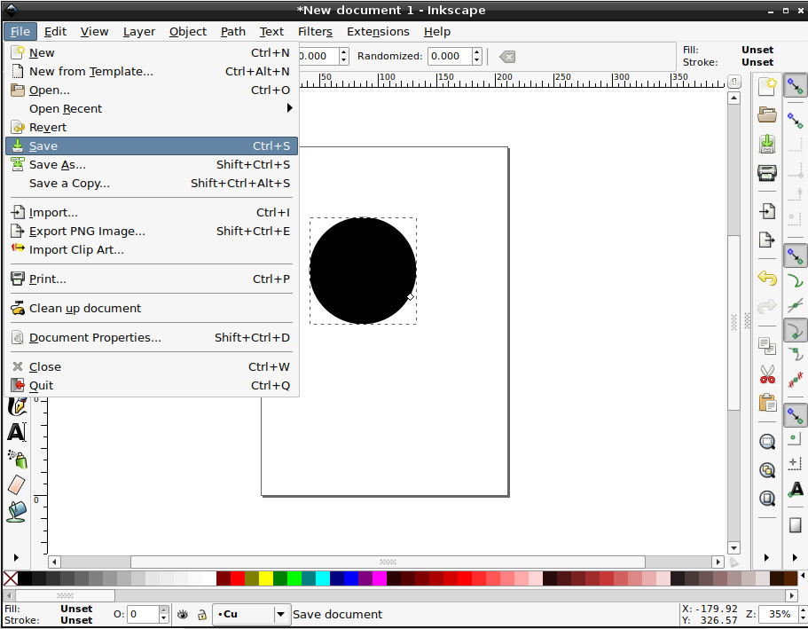
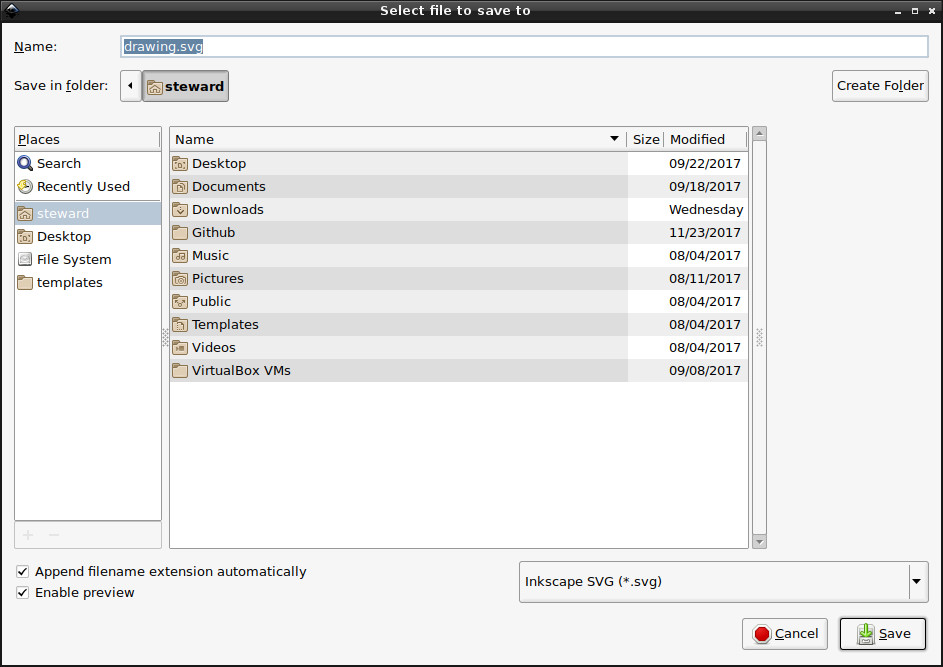
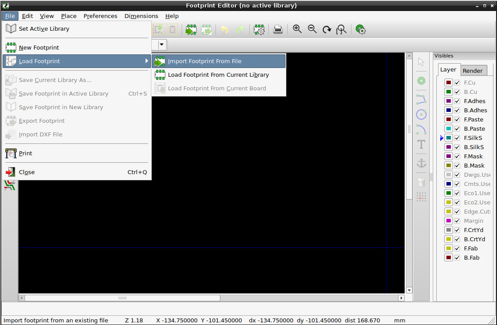
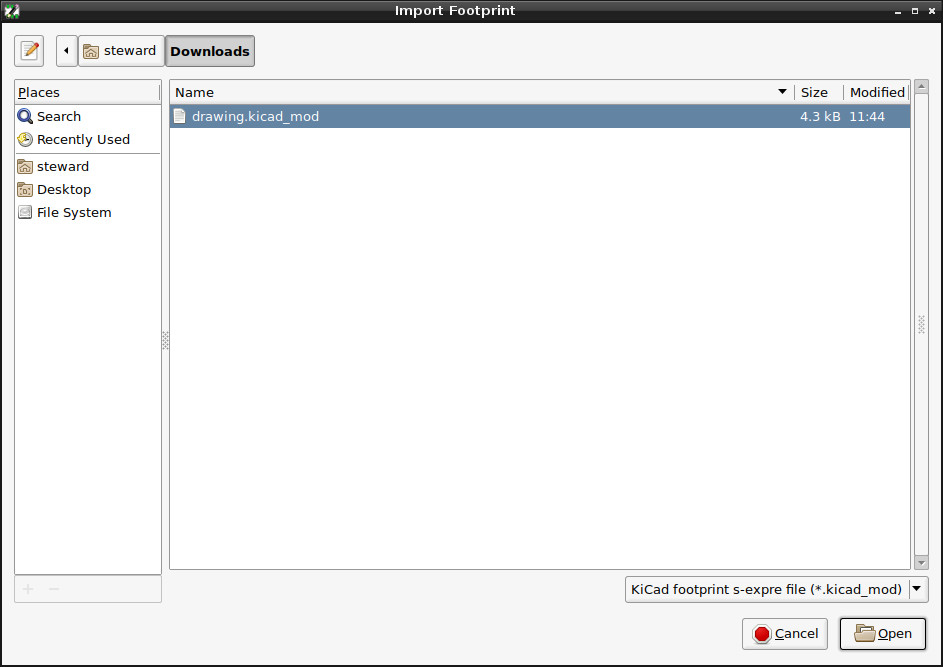
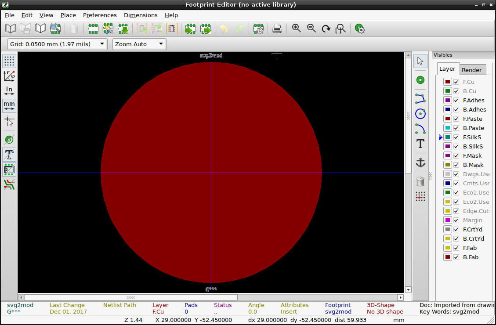

Steward
分享是一種喜悅、更是一種幸福
繪圖相關 - KiCAD - 0.20140622 BZR4027 - 如何把SVG轉成Footprint元件
參考資訊：
https://github.com/mtl/svg2mod
步驟如下：
1. 安裝svg2mod
$ cd $ git clone https://github.com/mtl/svg2mod $ cd svg2mod $ sudo python setup.pu install
2. 安裝Inkscape
$ sudo apt-get install inkscape
3. 製作Footprint圖形


Layer Name
| Inkscape layer name | KiCad layer(s) | KiCad legacy | KiCad pretty |
|---|---|---|---|
| Cu | F.Cu, B.Cu | Yes | Yes |
| Adhes | F.Adhes, B.Adhes | Yes | Yes |
| Paste | F.Paste, B.Paste | Yes | Yes |
| SilkS | F.SilkS, B.SilkS | Yes | Yes |
| Mask | F.Mask, B.Mask | Yes | Yes |
| Dwgs.User | Dwgs.User | Yes | -- |
| Cmts.User | Cmts.User | Yes | -- |
| Eco1.User | Eco1.User | Yes | -- |
| Eco2.User | Eco2.User | Yes | -- |
| Edge.Cuts | Edge.Cuts | Yes | Yes |
| Fab | F.Fab, B.Fab | -- | Yes |
| CrtYd | F.CrtYd, B.CrtYd | -- | Yes |



存檔


4. 轉成SVG
$ svg2mod -i drawing.svg
Parsing SVG...
No handler for element {http://www.w3.org/2000/svg}defs
No handler for element {http://sodipodi.sourceforge.net/DTD/sodipodi-0.dtd}namedview
No handler for element {http://www.w3.org/2000/svg}metadata
Found SVG layer: Cu
Writing module file: drawing.kicad_mod
Writing polygon with 101 points
Parsing SVG...
No handler for element {http://www.w3.org/2000/svg}defs
No handler for element {http://sodipodi.sourceforge.net/DTD/sodipodi-0.dtd}namedview
No handler for element {http://www.w3.org/2000/svg}metadata
Found SVG layer: Cu
Writing module file: drawing.kicad_mod
Writing polygon with 101 points
5. KiCAD載入Footprint

選擇檔案

完成
